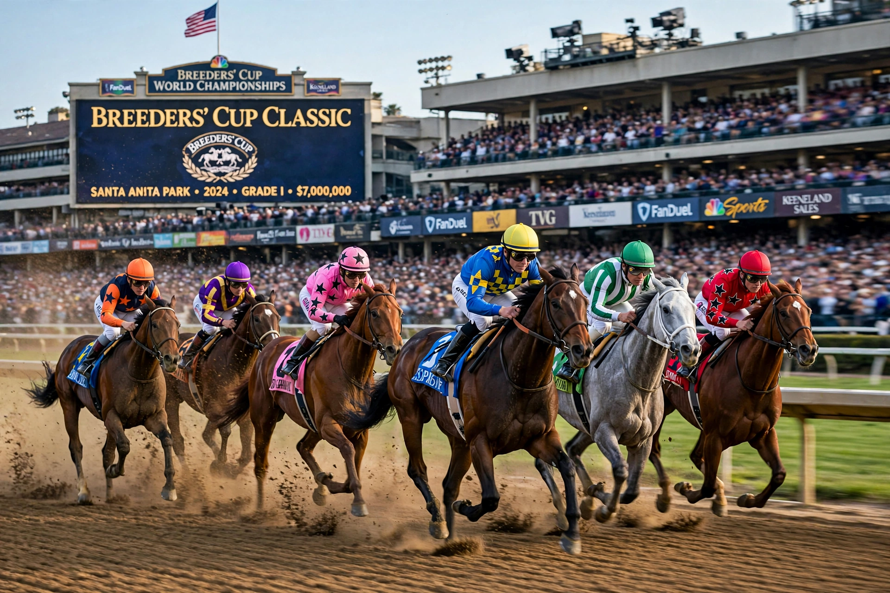

The Breeders' Cup Classic is a Grade I Weight for Age thoroughbred horse race for 3-year-olds and older run at a distance of 1 1/4 miles (2 km) on dirt. It is held annually as the culminating race of the Breeders' Cup.

First winner Wild Again (1984). Famous winners include Sunday Silence, Cigar, Zenyatta (only mare to win, 2009), American Pharoah (2015, completing Grand Slam with Triple Crown), Arrogate, Gun Runner, Flightline (2022).
Tiznow is the only two-time winner (2000, 2001). The race often decides Horse of the Year.